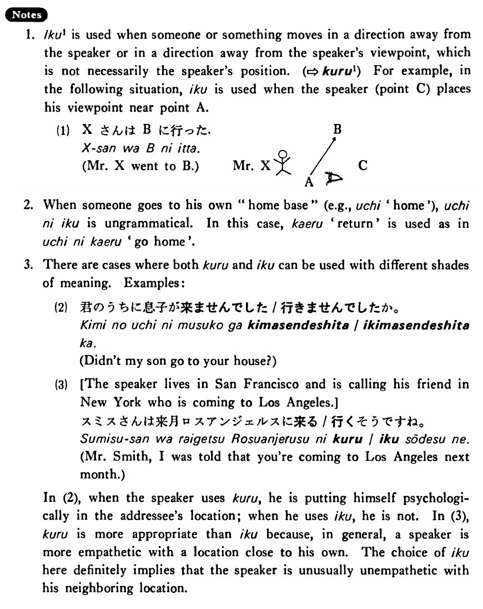

行く・いく (1) (B. 149)
- (ksa).
- 田中さんは来週アメリカへ・に行く・行きます。
- Mr. Tanaka is going to America next week.
- (ksb).
- 私は東京から大阪までバスで行った・行きました。
- I went from Tokyo to Osaka by bus.
- (a).
- 私は毎朝八時に会社に行く。
- I go to work at eight every morning.
- (b).
- A:今晩私のうちでパーティーをしますが来ませんか。 B:はい、行きます。
- A: We are going to have a party at my place tonight. Wouldn't you like to come? B: Yes, I'll come.
- (c).
- あなたにもその知らせは行きましたか。
- Did the notice go to you, too?
- (d).
- その村にもバスは行っている。
- The bus goes to the village, too.
